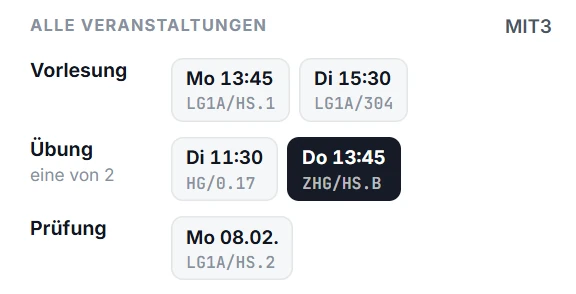
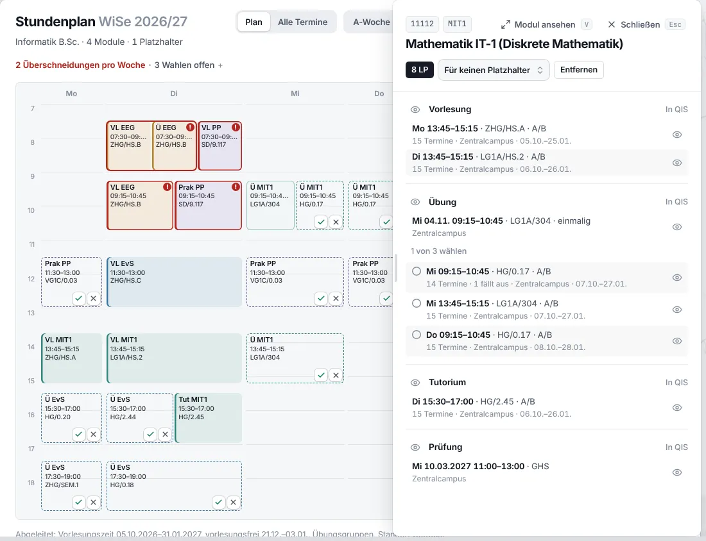
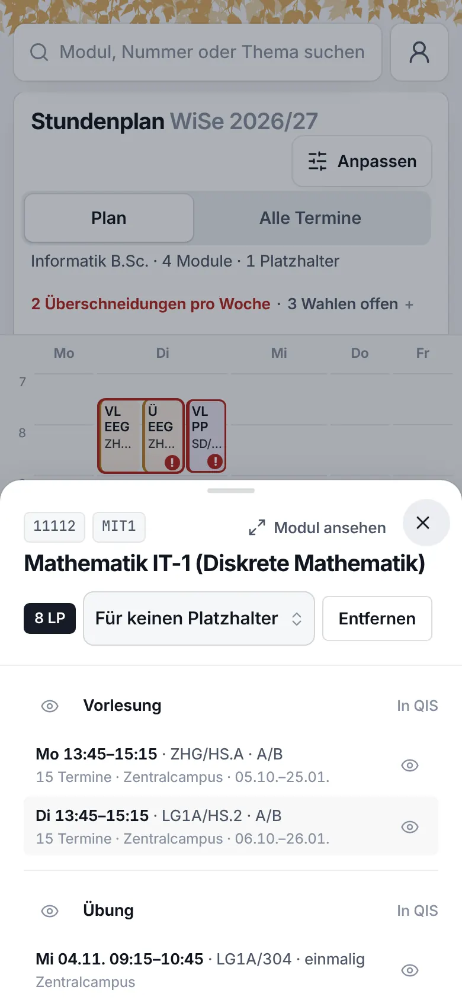

Betula · Konzepte · vierte Runde · 26.10.2026
Derselbe Termin, zwei Ansichten. Von der Modulseite aus zum Nachschlagen. Aus dem Stundenplan erst die Infos, dann das Anpassen: so viele Gruppen anhaken, wie du willst, eine Veranstaltung oder ein Datum ausblenden. Gruppen und Veranstaltungen stehen in einem festen Raster, auch wenn es sieben sind.
„Für den Kalender braucht es aber noch ein paar mehr Optionen … auch mehr als eine Übung sich anzeigen zu lassen … Module mit sehr vielen Übungen … trennen zwischen der informativen Ansicht für die Modulpage und Mein Studiengang und dann der Ansicht bei der Kalender-Page … Mach da einfach ein festes Raster.“
Die Ordnung bleibt. Dein Bild der dritten Runde und dieselbe Stelle jetzt:

auch mehr als eine Übung … im Kalender anzeigenIm Stundenplan sind die Gruppen Kacheln mit Haken, so viele du willst. Wählen musst du nicht: ohne Haken stehen alle gestrichelt da.
Module mit sehr vielen ÜbungenEin festes Raster, drei je Reihe. Ab sieben Gruppen fünf und „+2“, die passenden zuerst.
trennen zwischen der informativen Ansicht … und der Ansicht bei der Kalender-PageVon der Modulseite zum Nachschlagen. Aus Stundenplan und Startseite erst die Infos, dann „Im Stundenplan“ zum Anpassen.
ein festes Raster, z.B. 3 Termine pro RowAlle Veranstaltungen in drei gleich breiten Spalten.
Am Handy halb hoch, am Rechner daneben, als ganze Seite in zwei Spalten. „Darunter“ wählt die Ansicht: über Startseite und Stundenplan zum Anpassen, über der Modulseite zum Nachschlagen.
Woher du kommst, sagt, was du willst. Dieselbe Übung von MIT1 am 04.11.:
Heute, Morgen, Diese Woche, Als Nächstes: dein Tag.
Woche und Termine, der Ort zum Anpassen.
Auch neben Katalog, Studiengang, Merkliste und Mein Studium.
Steht das Modul in deinem Plan, zum Anpassen, sonst zum Nachschlagen.
Die Gruppen sind Kacheln mit Haken. Was angehakt ist, steht im Stundenplan und im Abo, so viele, wie du willst.
Bei Informatik hat kein Modul mehr als vier. Die meisten im Katalog hat Praxis und methodische Begleitung (Soziale Arbeit): sieben Übungsgruppen in Sachsendorf. Zu deinem Plan passt nur die am Donnerstag.
Auf der Modulseite tippst du einen Termin an, etwa die Übung von Mathematik IT-3, einem Modul des dritten Semesters. Derselbe Termin, mit vier Unterschieden:
Unter der Linie „Zum Nachschlagen“ steht, was man selten braucht, aber dann schnell finden will. Am Handy unter dem Alltag, am Rechner füllt es die rechte Spalte.
Ebene 1 bis 3, wie das Sheet halb hoch sie zeigt, jeder mit seiner Ansicht. Was sich ändert, ändert das Ticket; ein großer Knopf kommt nur zum Nachschlagen dazu.
Was man von einem Termin will, in der Reihenfolge, in der man es braucht, hier aus dem Stundenplan. Je höher die Ebene, desto größer und weiter oben.
Modul als farbiges Kürzel, gestrichelt außerhalb des Plans; Art, Titel.
Tag mit ‹ ›, wie bald, Uhrzeit, Raum mit Gebäude und Standort. Was an diesem Tag anders ist, verändert das Ticket selbst.
Die Person mit ihrer Rolle; eine Überschneidung und QIS' Hinweis als eigene Zeile. Zum Nachschlagen stehen hier die Gruppen.
Die Gruppen zum Anhaken, „Übung zeigen“, ein Datum ausblenden. Wirkt sofort, auch im Abo.
Der Tag als Band mit „danach“, die Reihe als Punkte, Modul und Prüfung als Zeilen.
Die Woche, alle Veranstaltungen im Raster, die Lehrenden, Zeitraum und Ausnahmen.
QIS mit Art und Nummer, QIS' Wortlaut, der Stand der Daten, „In QIS öffnen“.
„In den Kalender“ bei einem Termin außerhalb des Plans. Einplanen gehört dem Modul und steht dort.
Wenige Zeichen, immer gleich verwendet, in Betulas Strichstärke und Farben. Farbe trägt nur Bedeutung: das Modul, Grün für bald und passt, Gelb für anders, Rot für fällt aus und überschneidet sich.
Ein Knopf tut etwas, schaltet etwas, führt woandershin, bedient die Ansicht oder sagt, woher etwas kommt. Gemischt in einer Reihe sehen alle gleich wichtig aus. Getrennt sagt der Ort, was der Knopf tut.
Teilen und Schließen; am Rechner dazu „Ganze Seite“ mit V.
Erste Runde: Link kopieren in der Knopfreihe
Nur zum Nachschlagen, wenn der Termin nicht in deinem Plan ist. Im Stundenplan gibt es keine.
Dritte Runde: Diese Gruppe nehmen als großer Knopf
Haken an den Gruppen, „Übung zeigen“, „Ausblenden“. Wirkt sofort, ohne Speichern.
Neu in der vierten Runde
„Stundenplan“ am Tag, „Anpassen“ an den Gruppen, „Zum Modul“ und die Prüfung als Zeilen.
Erste Runde: Im Stundenplan neben In den Kalender
Quelle: QIS · Übung 130431In QIS öffnen ↗
Woher es kommt, für wen es nachsehen will: QIS, Nummer, Wortlaut, Stand.
Erste Runde: In QIS als Knopf, Kopieren am Raum
Der Schlüssel ist der, den Betula für Abo und Kalender schon hat: Veranstaltung und fünf Zeichen für die Zeile. Die Adresse sagt auch, welche Ansicht kommt.
/event/148304-e4bf3/2026-11-04Was „Teilen“ teilt. Steht das Modul in deinem Plan, mit „Im Stundenplan“, sonst zum Nachschlagen; ohne JavaScript rendert sie der Server.
/studyplan?termin=148304-e4bf3&on=2026-11-04Das Sheet, am Rechner daneben, wie open= beim Modul: über Stundenplan und Startseite zum Anpassen, über /catalog/module/11112?termin=… zum Nachschlagen.
URL:https://betula.app/event/148304-e4bf3/2026-11-04Der Link jedes Eintrags im Abo führt zur Seite des Datums statt nach QIS.
/event/148304-e4bf3/2026-11-05Kein „Nicht gefunden“: die Seite zeigt das Ticket des nächsten Datums und sagt, dass an diesem Tag nichts ist.
Jede angehakte Gruppe steht voll im Stundenplan, zählt bei Überschneidungen mit anderen Modulen und kommt ins Abo. Vorschlag: ja, ohne „Haupt-“ und „Ersatzgruppe“.
So zeigt der Stundenplan heute eine offene Wahl: bis vier Gruppen gestrichelt, mehr nur im Termin. Vorschlag: so lassen.
Vorschlag: ja. Das Abo zeigt, was der Stundenplan zeigt; ein ausgeblendetes Datum fehlt auch im Kalender.
Bis sechs passt alles in zwei Reihen. Vorschlag: ja; dein Termin ist immer unter den fünf.
Vorschlag: ja, mit „Anpassen ›“ in den Stundenplan. So gibt es einen Ort zum Anpassen, nicht zwei.
QIS nennt je Veranstaltung die Lehrenden; Radix legt sie in keine Sicht, darum steht dort, wer das Modul verantwortet. Vorschlag: eine Sicht v_event_person.
| Wo | Ein Tipp führt | Was dabei verloren geht |
|---|---|---|
| Startseite · „Als Nächstes“ | „Modul ansehen“ ins Modul neben dem Stundenplan, „Stundenplan“ in den Stundenplan. Die Karte selbst ist kein Link. | Welcher Termin es war. |
| Startseite · Heute, Morgen | Den Stundenplan mit dem Modul daneben. | Das Datum und sein Hinweis. |
| Startseite · Diese Woche | Nichts; die Balken sind ein Bild. | Welcher Balken was ist. |
| Stundenplan | Das Modul daneben, der Termin darin markiert. | Was nur an diesem Datum gilt. |
| Modulseite · Termine | QIS, im selben Tab. | Betula selbst. |
| Kalender-Abo | QIS. | Betulas Sicht auf den Termin. |


Daten: betula.app, Stand 21.10.2026; Praxis und methodische Begleitung aus canary, Stand 26.10.2026 · Entwurf, nichts davon ist gebaut.